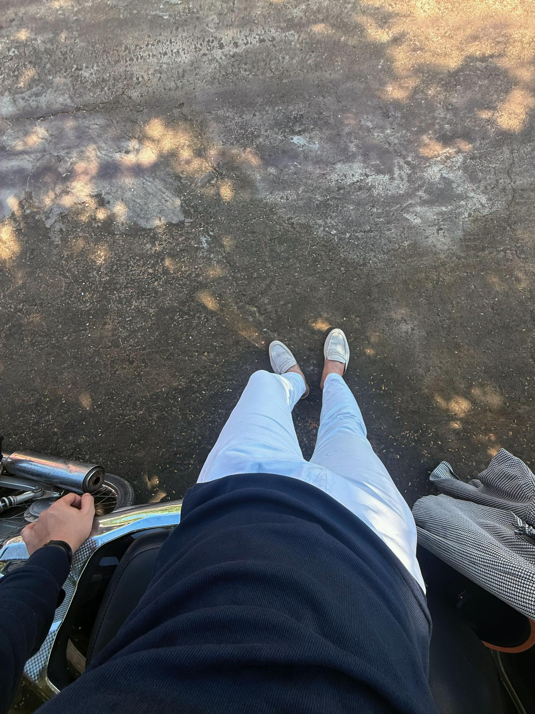
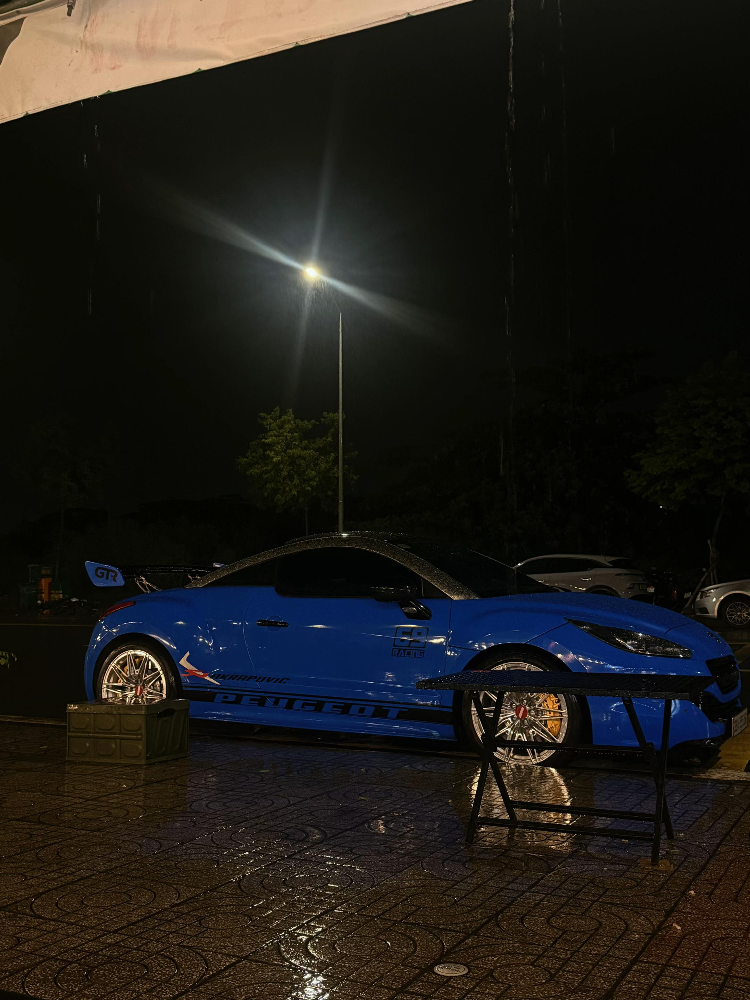
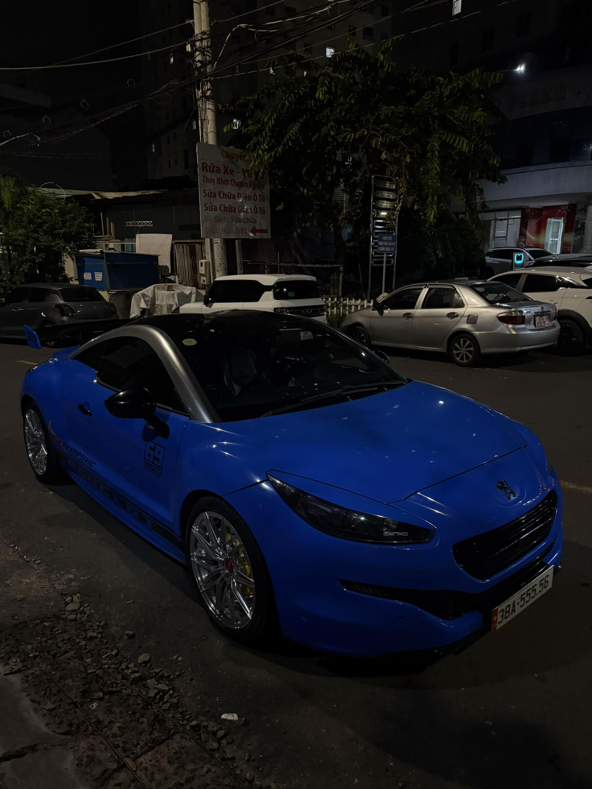
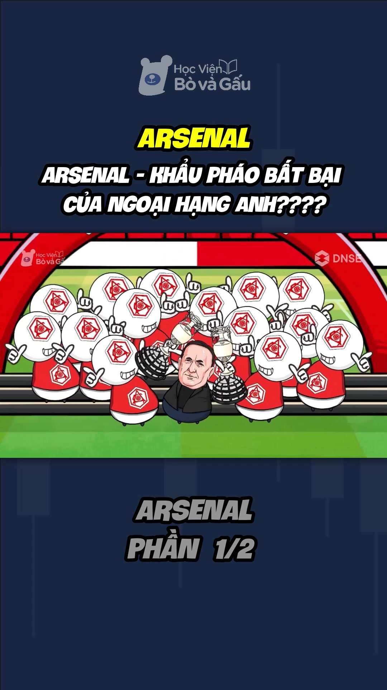

5 video, đăng từ 2026-06-29 đến 2026-11-15. Giờ tính theo giờ Việt Nam.
Follower1132,2k tim
View trung vị / video281cao nhất 695
Tương tác trung vị2,7%like+bình luận+chia sẻ+lưu / view
Video / tuần0,32 video trong 30 ngày qua
Điểm chính
View tích lũy trung vị đi ngang: 234 ở 2 tháng có bài đầu → 281 ở 2 tháng có bài cuối; chưa so ở cùng tuổi bài
0/5 video đạt từ 2,8k view (10× trung vị kênh) và mang về 0,0% tổng view; top 3 chiếm 82,3%
Chưa đủ nhóm có nhãn để so sánh
Đăng 0,3 video/tuần; tháng dày nhất T11/26 có 2 video; 30 ngày qua: 2 video
Chưa đủ mẫu để so sánh mức độ dài
Chưa đủ mẫu để so sánh khung giờ
Chưa đủ mẫu để so sánh thứ
Video nào thắng?
Top 1 đạt 695 view, gấp 2,5× một video bình thường của kênh
1

Old Money2026-10-02 · 32s
695gấp 2,5× trung vị
2Hello quảng trị2026-09-28 · 28s
373gấp 1,3× trung vị
3

Ngoại thất nội lực nhưng nội công là công chúa2026-11-15 · 42s
281gấp 1,0× trung vị
4

🫠🫠2026-11-14 · 517s
197gấp 0,7× trung vị
5#CapCut 2026-06-29 · 14s
94gấp 0,3× trung vị
Vạch đứt: trung vị kênh 281 view
Cách đọc các biểu đồ so sánh nhóm (loại nội dung, giờ, thứ, độ dài): mỗi hàng là một nhóm video. Dải xám là nửa số video ở giữa (P25–P75), vạch đậm là trung vị. Trục không phải view thô mà là view của video chia cho trung vị các video khác đăng trong ±7 ngày: 1× nghĩa là ngang bài cùng thời, nên một nhóm không "thắng" chỉ vì rơi vào tuần kênh đang viral. Nhóm chỉ được tô màu khi vượt nhóm kế tiếp từ 1,3 lần và chênh lệch khó là ngẫu nhiên; không có nhóm nào tô màu nghĩa là dữ liệu chưa đủ để nói nhóm nào hơn.
Chưa có nhãn loại hình. Hãy điền labels.json theo hướng dẫn của skill rồi chạy lại để biết loại nội dung nào thắng.
Kiểm tra bằng chứng
View là số tích lũy trong cache, không phải view ở cùng tuổi bài; bài dưới 7 ngày tuổi lúc thu thập còn đang tích view và được đếm riêng. "So với bài cùng thời" = view chia cho trung vị các bài khác đăng trong ±7 ngày (nới tới ±30 ngày nếu thiếu mẫu); cách này giảm nhiễu giai đoạn nhưng không chứng minh nhân quả. Hit = bài đạt từ 10× trung vị kênh. Nhóm dưới 5 bài là ít mẫu; không chọn làm nhóm dẫn đầu. Tỷ lệ vượt chuẩn dùng dấu >. Thiếu số đo hiển thị —; cache cũ có thể đã thay dữ liệu tương tác thiếu bằng 0. Không suy ra giữ chân, người xem quay lại hoặc cơ hội thị trường từ dữ liệu này.
Đã gắn nhãn 0/5 video. P25–P75 là khoảng phân vị, không phải khoảng tin cậy.
Độ ổn định theo loại nội dung
Chưa đủ dữ liệu.
Tỷ lệ hit theo quý (mọi bài)
Kỳ
n
Trung vị
Hit (≥2,8k)
2026-Q2
1
94
0/1
2026-Q3
1
373
0/1
2026-Q4
3 · 2 bài <7 ngày
281
0/3
Kiểm tra khi bỏ video nhiều view nhất toàn kênh
Chưa đủ dữ liệu.
So chủ đề trong cùng quý (chỉ kỳ có từ 2 loại)
Chưa đủ dữ liệu.
Độ dài trong cùng chủ đề (mốc chia theo phân vị của từng loại)
Chưa đủ dữ liệu.
Tương tác theo từng loại (trung vị tỷ lệ trên view)
Chưa đủ dữ liệu.
Cặp video để xem đối chứng thủ công
Chưa đủ dữ liệu.
Cặp đối chứng: cùng loại, cách tối đa 30 ngày, độ dài chênh tối đa 15% (ít nhất 10 giây), view chênh ít nhất 2 lần, cả hai bài đã đủ 7 ngày tuổi; mỗi loại tối đa 2 cặp, không lặp video, ưu tiên chênh view lớn. Chỉ dùng để xem thủ công, chưa chứng minh nguyên nhân.
Kênh đang lên hay đi xuống?
View tích lũy trung vị đi ngang: 234 ở 2 tháng có bài đầu → 281 ở 2 tháng có bài cuối; chưa so ở cùng tuổi bài
Toàn bộ 5 video theo ngày đăng
Trung vị theo tuần (kỳ có từ 3 video) · mỗi chấm là một video, bấm để mở · trục dọc thang log: mỗi nấc gấp 10 lần
Có phụ thuộc vào vài video viral?
0/5 video đạt từ 2,8k view (10× trung vị kênh) và mang về 0,0% tổng view; top 3 chiếm 82,3%
Số video theo mức view · toàn bộ kênh
dưới 1k view
5 video· 100,0% tổng view
Đăng giờ nào?
Chưa đủ mẫu để so sánh khung giờ
View theo khung giờ đăng (giờ VN)
Sáng (5–11h)
—94 · 1 videoít mẫu
Tối (18–23h)
—327 · 4 videoít mẫu
1×3×
Trục: gấp mấy lần bài cùng thời (thang log) · số mờ: view trung vị · vạch đứt: bằng các bài đăng cùng thời (1×)
Đăng thứ mấy?
Chưa đủ mẫu để so sánh thứ
View theo thứ đăng
T2
—234 · 2 videoít mẫu
T6
—695 · 1 videoít mẫu
T7
—197 · 1 videoít mẫu
CN
—281 · 1 videoít mẫu
1×3×
Trục: gấp mấy lần bài cùng thời (thang log) · số mờ: view trung vị · vạch đứt: bằng các bài đăng cùng thời (1×)
Video dài bao nhiêu?
Chưa đủ mẫu để so sánh mức độ dài
View theo độ dài
≤30s
—234 · 2 videoít mẫu
31–45s
—488 · 2 videoít mẫu
>90s
—197 · 1 videoít mẫu
1×3×
Trục: gấp mấy lần bài cùng thời (thang log) · số mờ: view trung vị · vạch đứt: bằng các bài đăng cùng thời (1×)
Kênh Tiktok chính thức của Học viện Bò và Gấu (thề luôn)
50 video, đăng từ 2023-04-14 đến 2023-11-20. Giờ tính theo giờ Việt Nam.
⚠ Chưa ghi nhận video mới trong 1092 ngày trong dữ liệu thu thập (video gần nhất 2023-11-20).
Follower247k2,4 tr tim
View trung vị / video198kcao nhất 1,2 tr
Tương tác trung vị3,4%like+bình luận+chia sẻ+lưu / view
Video / tuần1,60 video trong 30 ngày qua
Điểm chính
View tích lũy trung vị giảm: 264k ở 3 tháng có bài đầu → 163k ở 3 tháng có bài cuối; chưa so ở cùng tuổi bài
0/50 video đạt từ 2 tr view (10× trung vị kênh) và mang về 0,0% tổng view; top 3 chiếm 20,1%
Chưa đủ nhóm có nhãn để so sánh
Đăng 1,6 video/tuần; tháng dày nhất T6/23 có 8 video; 30 ngày qua: 0 video
Không mức độ dài nào nổi trội rõ: chênh lệch giữa các nhóm còn trong mức ngẫu nhiên (trung vị 214k–235k)
Chưa đủ mẫu để so sánh khung giờ
Không thứ nào nổi trội rõ: chênh lệch giữa các nhóm còn trong mức ngẫu nhiên (trung vị 143k–505k)
Video nào thắng?
Top 1 đạt 1,2 tr view, gấp 6,1× một video bình thường của kênh
1Không nản lòng trước thất bại, Honda cho rằng Tokai Seiki chỉ là đen t2023-09-18 · 278s
1,2 trgấp 6,1× trung vị
2Sang đầu những năm 70, những gì đã diễn ra dường như là một sự sắp đặt2023-09-21 · 288s
1,1 trgấp 5,6× trung vị
3NETFLIX - Kẻ thay đổi cuộc chơi và thói quen xem phim của cả thế giới2023-07-19 · 283s
860kgấp 4,3× trung vị
4Sau 3 mùa đầu tiên đầy khó khăn. Với cương vị là huấn luyện viên trưởn2023-04-21 · 355s
853kgấp 4,3× trung vị
5Tháng 9 năm 2006, với số tiền 1,5 triệu đô la Mỹ tài trợ từ bạn bè, gi2023-06-02 · 251s
789kgấp 4,0× trung vị
6

Arsenal ban đầu là một đội bóng do David Danskin - một ông quản lý xưở2023-11-13 · 336s
697kgấp 3,5× trung vị
7Ngày 12 tháng 1 năm 1964, tại Albuquerque, Hoa Kỳ. Một đứa trẻ tên là 2023-07-07 · 240s
686kgấp 3,5× trung vị
8Nắm trong tay giấc mơ của người bạn, ông Vũ tiến thẳng lên Sài gòn lập2023-08-03 · 191s
645kgấp 3,3× trung vị
9Các thương vụ bán "siêu sao trẻ triển vọng của nhà trồng được" hoặc cá2023-11-15 · 313s
607kgấp 3,1× trung vị
10Là trò chơi phối hợp đồng đội 5 đấu 5 đầy tính chiến thuật. Nơi mà mỗi2023-06-05 · 276s
601kgấp 3,0× trung vị
Vạch đứt: trung vị kênh 198k view
Cách đọc các biểu đồ so sánh nhóm (loại nội dung, giờ, thứ, độ dài): mỗi hàng là một nhóm video. Dải xám là nửa số video ở giữa (P25–P75), vạch đậm là trung vị. Trục không phải view thô mà là view của video chia cho trung vị các video khác đăng trong ±7 ngày: 1× nghĩa là ngang bài cùng thời, nên một nhóm không "thắng" chỉ vì rơi vào tuần kênh đang viral. Nhóm chỉ được tô màu khi vượt nhóm kế tiếp từ 1,3 lần và chênh lệch khó là ngẫu nhiên; không có nhóm nào tô màu nghĩa là dữ liệu chưa đủ để nói nhóm nào hơn.
Chưa có nhãn loại hình. Hãy điền labels.json theo hướng dẫn của skill rồi chạy lại để biết loại nội dung nào thắng.
Kiểm tra bằng chứng
View là số tích lũy trong cache, không phải view ở cùng tuổi bài; bài dưới 7 ngày tuổi lúc thu thập còn đang tích view và được đếm riêng. "So với bài cùng thời" = view chia cho trung vị các bài khác đăng trong ±7 ngày (nới tới ±30 ngày nếu thiếu mẫu); cách này giảm nhiễu giai đoạn nhưng không chứng minh nhân quả. Hit = bài đạt từ 10× trung vị kênh. Nhóm dưới 5 bài là ít mẫu; không chọn làm nhóm dẫn đầu. Tỷ lệ vượt chuẩn dùng dấu >. Thiếu số đo hiển thị —; cache cũ có thể đã thay dữ liệu tương tác thiếu bằng 0. Không suy ra giữ chân, người xem quay lại hoặc cơ hội thị trường từ dữ liệu này.
Đã gắn nhãn 0/50 video. P25–P75 là khoảng phân vị, không phải khoảng tin cậy.
Độ ổn định theo loại nội dung
Chưa đủ dữ liệu.
Tỷ lệ hit theo quý (mọi bài)
Kỳ
n
Trung vị
Hit (≥2 tr)
2023-Q2
16
264k
0/16
2023-Q3
21
262k
0/21
2023-Q4
13
138k
0/13
Kiểm tra khi bỏ video nhiều view nhất toàn kênh
Chưa đủ dữ liệu.
So chủ đề trong cùng quý (chỉ kỳ có từ 2 loại)
Chưa đủ dữ liệu.
Độ dài trong cùng chủ đề (mốc chia theo phân vị của từng loại)
Chưa đủ dữ liệu.
Tương tác theo từng loại (trung vị tỷ lệ trên view)
Chưa đủ dữ liệu.
Cặp video để xem đối chứng thủ công
Chưa đủ dữ liệu.
Cặp đối chứng: cùng loại, cách tối đa 30 ngày, độ dài chênh tối đa 15% (ít nhất 10 giây), view chênh ít nhất 2 lần, cả hai bài đã đủ 7 ngày tuổi; mỗi loại tối đa 2 cặp, không lặp video, ưu tiên chênh view lớn. Chỉ dùng để xem thủ công, chưa chứng minh nguyên nhân.
Kênh đang lên hay đi xuống?
View tích lũy trung vị giảm: 264k ở 3 tháng có bài đầu → 163k ở 3 tháng có bài cuối; chưa so ở cùng tuổi bài
Toàn bộ 50 video theo ngày đăng
Trung vị theo tháng (kỳ có từ 3 video) · mỗi chấm là một video, bấm để mở · trục dọc thang log: mỗi nấc gấp 10 lần
Có phụ thuộc vào vài video viral?
0/50 video đạt từ 2 tr view (10× trung vị kênh) và mang về 0,0% tổng view; top 3 chiếm 20,1%
Số video theo mức view · toàn bộ kênh
30k–100k view
11 video· 4,3% tổng view
100k–300k view
20 video· 22,2% tổng view
300k–1 tr view
17 video· 58,9% tổng view
từ 1 tr view
2 video· 14,6% tổng view
Đăng giờ nào?
Chưa đủ mẫu để so sánh khung giờ
View theo khung giờ đăng (giờ VN)
Sáng (5–11h)
0,3×44k · 1 videoít mẫu
Chiều (14–18h)
0,7×106k · 2 videoít mẫu
Tối (18–23h)
1,0×214k · 47 video
0,3×1×3×
Trục: gấp mấy lần bài cùng thời (thang log) · số mờ: view trung vị · vạch đứt: bằng các bài đăng cùng thời (1×)
Đăng thứ mấy?
Không thứ nào nổi trội rõ: chênh lệch giữa các nhóm còn trong mức ngẫu nhiên (trung vị 143k–505k)
View theo thứ đăng
T2
0,7×176k · 14 video
T3
0,8×143k · 6 video
T4
1,0×315k · 7 video
T5
3,0×505k · 5 video
T6
1,1×295k · 12 video
T7
0,8×207k · 3 videoít mẫu
CN
1,1×132k · 3 videoít mẫu
0,3×1×3×
Trục: gấp mấy lần bài cùng thời (thang log) · số mờ: view trung vị · vạch đứt: bằng các bài đăng cùng thời (1×)
Video dài bao nhiêu?
Không mức độ dài nào nổi trội rõ: chênh lệch giữa các nhóm còn trong mức ngẫu nhiên (trung vị 214k–235k)
View theo độ dài
1–3 phút
0,3×45k · 2 videoít mẫu
3–4 phút
1,4×235k · 10 video
4–6 phút
1,0×214k · 37 video
>6 phút
0,4×103k · 1 videoít mẫu
0,3×1×3×
Trục: gấp mấy lần bài cùng thời (thang log) · số mờ: view trung vị · vạch đứt: bằng các bài đăng cùng thời (1×)
Hashtag nào đi kèm view cao?
Không hashtag đủ mẫu nào đi kèm view cao hơn hẳn trung vị; không chứng minh hashtag làm tăng view
Hashtag dùng ít nhất 5 lần
#hocvienbovagau
207k45 video
100k300k
Trục: view (thang log) · vạch đứt: trung vị kênh 198k